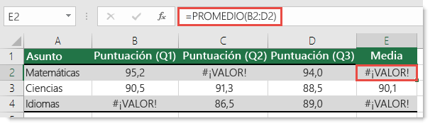

Funcion Promedio!!
La funcion promedio de Excel calcula la media aritmetica de una serie de datos. Es decir, suma todos los valores de la variable que estamos analizando y los divide entre la cantidad de valores sumados.

Volver a las Funciones